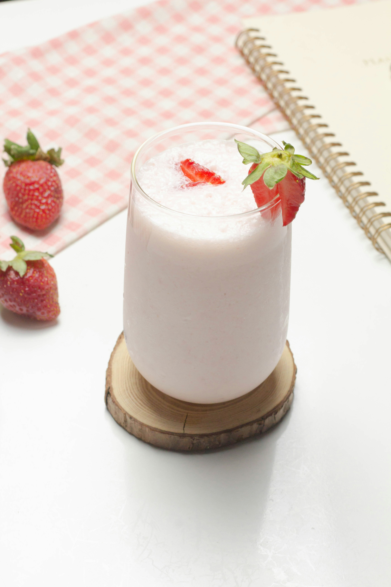

Creamy Strawberry Lemonade
Home

Description
This creamy strawberry lemonade has only 3 ingredients, plus ice and water. Keep lemons and frozen strawberries on hand, and sweetened condensed milk in the pantry, and you can enjoy this treat all summer.
Ingredients
- 2 cups frozen whole strawberries
- 1 1/2 medium lemons, chopped and seeded, plus lemon slices for garnish
- 1 cup water
- 1 cup ice cubes, plus more for serving
- 1/2 cup sweetened condensed milk
Steps
- Process strawberries, unpeeled lemons, water, ice, and sweetened condensed milk in a blender until smooth and creamy, 1 to 2 minutes.
- Divide among ice-filled glasses.
- Garnish each with a lemon slice and serve immediately.